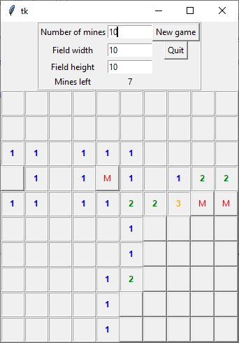

Minesweeper
Aknakereső
Minesweeper
Description
An implementation of the classic game. You can change the difficulty (the mine density) by setting the number of mines, the width and height of the field. You can start the game by clicking New game. By left click you can open a field. The number you see on the tile is the total number of mines in neighnouring tiles, that can be at most 8. By right click you can mark a field with an M for mine. The goal is to mark every mine and open every field without a mine.
Source
The UI is made with tkinter. When a too big field is set, the game starts slowly, because the drawing of the game field takes a lot of time, so the program can be optimized.
To do
- new game starts slowly, make it faster
- field/tile naming convention (in the code)
Download
Aknakereső
Leírás
A klasszikus játék egy megvalósítása. A nehézséget (az aknasűrűséget) az aknák számának és a játéktér méretének változtatásával lehet beállítani. A New game (Új játék) gombra kattintva indul a játék. Bal kattintással felfedhető egy mező. A mezőn lévő szám az összes szomszédos akna számát jelenti, ez legfeljebb 8 lehet. Jobb kattintással lehet egy mezőt aknának jelölni, ekkor egy M (mine = akna) jelenik meg rajta. A cél az összes akna megjelölése és az összes akna nélküli mező felfedése.
Forráskód
A grafikus felület tkinter-rel készült. Ha túl nagy méretű mezőt állítunk meg, a játék lassan indul, mert a játéktér kirajzolása sok időbe telik, tehát van még mit optimalizálni a programon.
Tennivalók
- új játék elindításakor lassú, ezen javítani
- mező/cserép nevezék (angolul, a forráskódban)